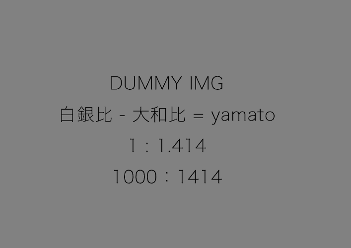

u-img
/public/lib/_scss/common/_unit/__img.scss
サンプル
画像に対する動作を指定します。 例：レスポンシブWEBデザイン（リキッド）に対応します。
classなし

<img
data-src="../../../../../lib/img/dummy/yamato.png"
alt="dummy">
classあり※レスポンシブWEBデザイン（リキッド）
<img
data-src="../../../../../lib/img/dummy/yamato.png"
alt="dummy"
class="u-img__max">
class/max-widthあり※レスポンシブWEBデザイン（リキッド）
<img
data-src="../../../../../lib/img/dummy/yamato.png"
alt="dummy"
style="max-width:500px;"
class="u-img__max">